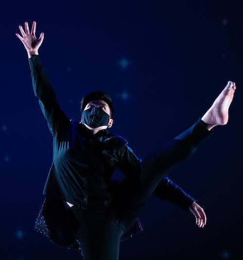

Hana Huie graduated cum laude with B.A.'s in Dance and Theatre from the Unviersity of Maryland, College Park in May 2020 and will graduate with a B.S. in Computer Science in December 2021.
At UMD, Hana served in successive terms as Vice President and President of Delta Chi Xi Honorary Dance Fraternity, organized within the theatre & dance schools as the dance liaison for
the Undergraduate Theatre Artists Society (UTAS), was inducted into Omicron Delta Kappa, and received numerous scholarships for academic and artistic achievement. Hana has worked on many productions
in roles such as dancer/performer, choreographer, playwright, designer, dramaturg, and producer, and continues to work as an alum performer in numerous productions within the UMD school of dance.
Currently seeking employment in CS/tech following December 2021 graduation. Primary interest in web developer (frontend or full stack) or software engineer roles.
Check out my LinkedIn
Download my Dance CV
Download my CS Resume

Frequency Machines choreographed by Krissy Harris. Photo by Jonathan Hsu.